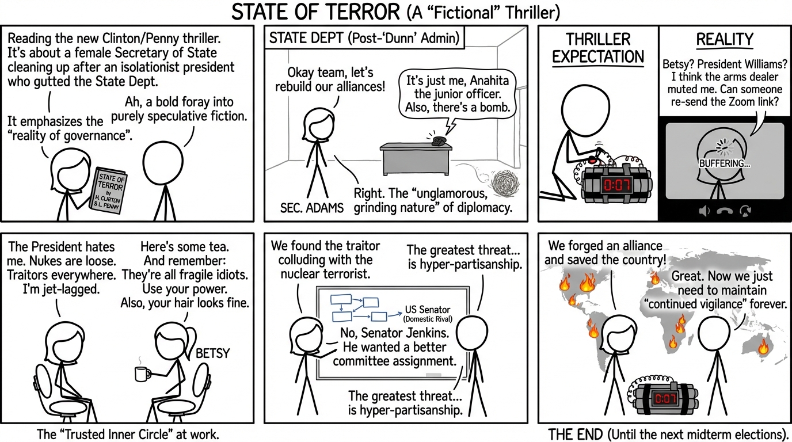

isbn-13: 9781982173685
Audible
AI Generated Content
Generated by gemini-3-pro-preview

State of Terror, co-authored by former U.S. Secretary of State Hillary Rodham Clinton and mystery novelist Louise Penny (ISBN 9781982173685), is a geopolitical thriller that examines the fragility of international alliances and the threat of nuclear terrorism. The narrative serves as a fictionalized exploration of worst-case scenarios in American foreign policy, blending Penny’s structural experience in the mystery genre with Clinton’s insider knowledge of the State Department.
Plot Summary and Story Arc
The story begins with the appointment of Ellen Adams as Secretary of State by the newly inaugurated President Douglas Williams. The relationship between the two is strained; they were bitter rivals during the primaries, and Adams views the appointment as a political move designed to neutralize her by assigning her a failing portfolio. The previous administration, led by the isolationist President Eric Dunn, has left America’s standing on the world stage diminished and its diplomatic corps hollowed out.
The inciting incident occurs when Anahita Dahir, a junior Foreign Service Officer, receives a baffling, coded email. Shortly thereafter, a bomb detonates on a bus in London. While the world reacts to the immediate tragedy, Adams uncovers a disturbing pattern suggesting this is merely the opening move of a larger conspiracy. The plot follows Adams as she travels from London to Paris and Frankfurt, attempting to unravel a web of deceit that implicates not only foreign extremists but also domestic elements.
The central antagonist is Bashir Shah, a Pakistani arms dealer who has acquired nuclear capabilities. The narrative reveals that during the “Dunn” administration, the U.S. withdrawal from global agreements created a power vacuum that allowed Shah to operate unchecked. The threat escalates when it becomes clear that three nuclear devices exist. The story arc transforms into a race against time as Adams and her team—including her close friend and counselor Betsy Jameson—attempt to locate the warheads before they are detonated in American cities.
The climax takes place on American soil, where the final nuclear threat must be neutralized. The resolution involves high-stakes diplomacy, military intervention, and the exposure of treasonous actors within the U.S. government who colluded with foreign enemies for political gain.
Character Development
- Ellen Adams: As the protagonist, Adams is depicted as a pragmatic, resilient, and intellectually formidable figure. While she shares obvious biographical parallels with Clinton, she is established as a distinct character—a widow and media executive turned politician. Her development is defined by her transition from a political outsider within the administration to an indispensable partner to the President. She is frequently underestimated by her male counterparts, a recurring dynamic she navigates with weary competence.
- Betsy Jameson: Modeled after Clinton’s real-life friend Betsy Ebeling, Jameson serves as Adams’s emotional anchor and unofficial advisor. She provides a sounding board for the Secretary, offering plain-spoken wisdom that cuts through diplomatic jargon. Her presence underscores the narrative’s focus on the necessity of trusted inner circles.
- President Douglas Williams: Initially presented as an antagonist to Adams, Williams evolves significantly. The narrative arc sees him move from political posturing to genuine statesmanship. The thawing of relations between Williams and Adams—from mutual suspicion to a forged alliance—is a central character dynamic, symbolizing the unification of a fractured government.
- Anahita Dahir: Representing the career civil servants, Dahir’s journey from an overlooked junior officer to a key player in saving the country highlights the importance of the institutional knowledge held by the “Deep State” bureaucracy.
Key Themes and Messages
The Fragility of Democracy and Alliances
The novel argues that American security is inextricably linked to its engagement with the world. The authors critique isolationism, portraying the fictional “Dunn” administration’s “America First” policies as the direct cause of the terror threat. The book suggests that stepping back from global leadership creates vacuums filled by opportunists and terrorists.
The Reality of Governance
Clinton and Penny emphasize the unglamorous, grinding nature of high-level diplomacy. Unlike thrillers that rely solely on action heroes, State of Terror focuses on the logistical nightmares, jet lag, and intricate protocol involved in international relations.
“What was the point of having power if you didn’t use it? To make things better. To fix what was broken. To heal the sick. To bridge the divide.”
Domestic Betrayal
A significant theme is the danger posed by domestic political polarization. The novel posits that the greatest threat to the nation is not always external terrorism, but internal division and the willingness of political actors to sabotage the country for personal power. The text reflects on how hyper-partisanship creates vulnerabilities that foreign adversaries exploit.
Women in Power
The narrative frequently addresses the specific challenges faced by women in high office, including scrutiny of their appearance and the dismissal of their intuition. The bond between Ellen and Betsy illustrates the theme of female solidarity as a survival mechanism in a male-dominated environment.
The book concludes with the immediate crisis averted, but with a sobering acknowledgement of the continued vigilance required to maintain national security and democratic stability.